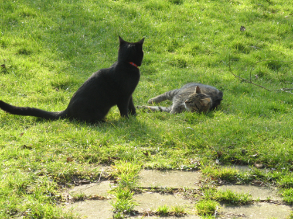

|

Liebe
ist die wunderbare Gabe,
einen Menschen so zu sehen, wie er nicht ist
Hannelore Schroth

Unsere Lieblinge:
Joe - 14.02.2004, bei uns seit Mai 2007
Gerry - Mai 2008
Holly - 07. Mai 2006
Salem/Lämmy - 07. Mai 2006
Wir trauern um unseren Liebling Lämmy, der seit 17. April unauffindbar
verschwunden ist.

Kater
MORHLI: 1993 - 7.7.2004
Hund
SCHLUMPI: 18. März 1988 - 20. APRIL 2005
Der Geist ist sein
eigener Herr
und er kann aus der Hölle den Himmel
und aus dem Himmel die
Hölle machen
John Milton
Humor
ist, wenn man trotzdem lacht
Wilhelm Busch
Die Rechtsprechung
ändert sich
- eine Glosse aus der SVZ vom 4.7.1999
1799:
Der auf frischer tat ertappte Einbrecher wird zu Tode verurteilt, jedoch
nicht mehr auf das Rad geflochten und mit glühenden Zangen gekniffen,
sondern ganz einfach aufgehangen.
1899:
Der gestern auf frischer Tat ertappte Einbrecher wird zu fünf Jahren
Zuchthaus verurteilt, jedoch nicht mehr mit Halseisen und Fußfesseln
versehen, sondern einfach bei Wasser und Brot eingesperrt.
1999:
Der auf frischer Tat gestellte Einbrecher wird auf der Polizeiwache
verhört, jedoch nicht mehr in Untersuchungshaft genommen, sondern nach
Feststellung seiner Personalien unter dem Beifall seiner Freunde
entlassen.
In Zukunft:
Der vor einem Vierteljahr auf frischer Tat ertappte Einbrecher wird nach
seiner Bewirtung auf der Polizeiwache an den Tatort zurückgebracht. Er
erhält ein persönliches Entschuldigungsschreiben des Polizeiprä-sidenten
und eine entsprechende finanzielle Entschädigung für den Eingriff in seine
persönliche Freiheit. Auf Wunsch spielt das Polizeiorchester den
"Gefangenen Chor" aus der Oper Nabucco.


|